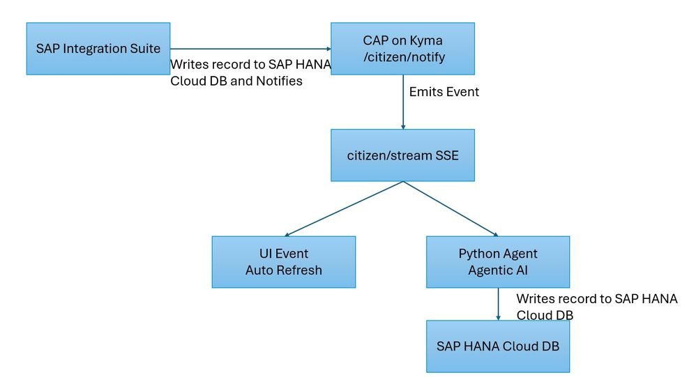
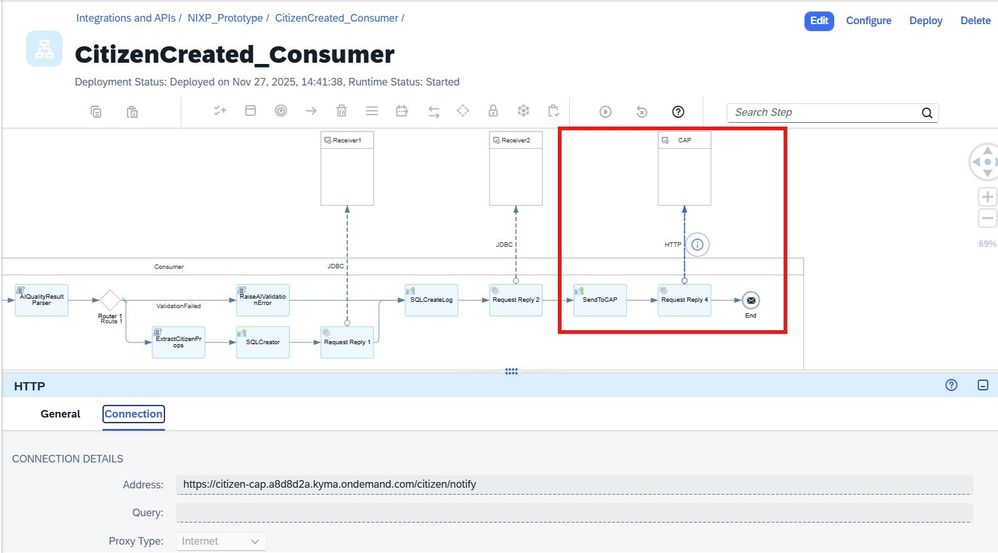
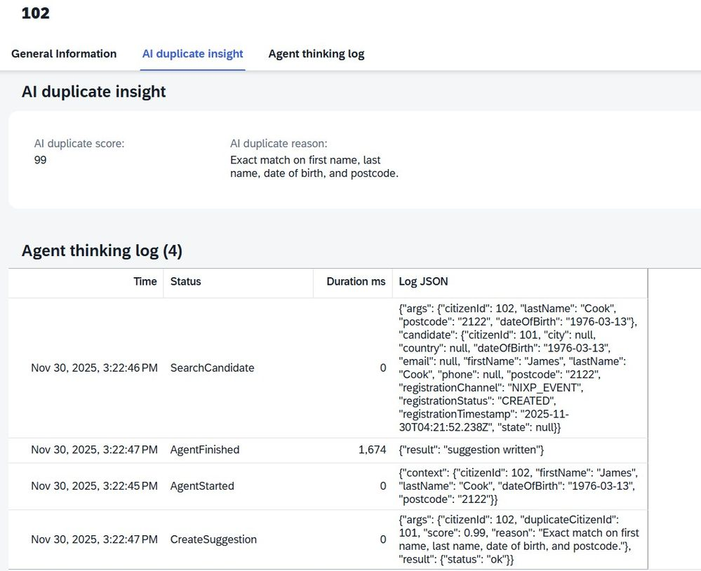

Introduction
This prototype demonstrates how a simple CAP application can evolve into an event-driven architecture enriched with autonomous agentic AI. The objective was to show how CAP can react to external events in real time, refresh the UI automatically, and trigger an AI workflow that identifies duplicate citizens without any user action.
The solution combines Kyma, SAP CAP, SAP HANA Cloud DB, SAP Integration Suite, and a Python agent with OpenAI, all running together.

End-to-End Flow
This application is built around a simple idea: when a citizen is created in the system, everything should react automatically.
The process starts in SAP Integration Suite. This is the continuation of the previous blog post. The iFlow inserts the new citizen into HANA Cloud and then calls CAP's notify endpoint with a simple JSON payload. This notify call is the explicit trigger, because CAP does not detect database changes on its own. Once CAP receives the notification, it broadcasts the event through its citizen stream endpoint using Server-Sent Events.
The UI and the Python agent are both listening to this stream. When they receive the event, each reacts independently. The UI refreshes its Fiori Elements binding and displays the new record. The agent retrieves the citizen through CAP OData, performs duplicate detection, prompts OpenAI, and writes its suggestions back through CAP. CAP exposes the suggestions via virtual enrichment fields so that the UI automatically displays AI insights during the next read.

Code
GitHub repository: shahidla / citizen-master-cap-docker
Agentic AI
The agent is packaged as a Python container running in Kyma. It listens continuously to the citizen stream. When it receives a CitizenCreated event, it reads the citizen through OData, prompts OpenAI with a structured tool-based instruction set, and follows the returned JSON. OpenAI selects the next actions such as fetching the citizen again, running a duplicate search, or writing the final suggestion.
To make the AI transparent, a thinking log table records each step in the agent run including search inputs, candidate lists, scores, and final reasoning. Users can view not only the AI result but also how the agent reached that conclusion. This makes the system trustworthy and audit friendly rather than a black box.

Conclusion
This prototype shows that a CAP application can be extended into a fully event-driven and agentic AI application, with all components running together inside Kyma without additional infrastructure. The result is a responsive and intelligent application that reacts to new information immediately and explains every decision it makes.